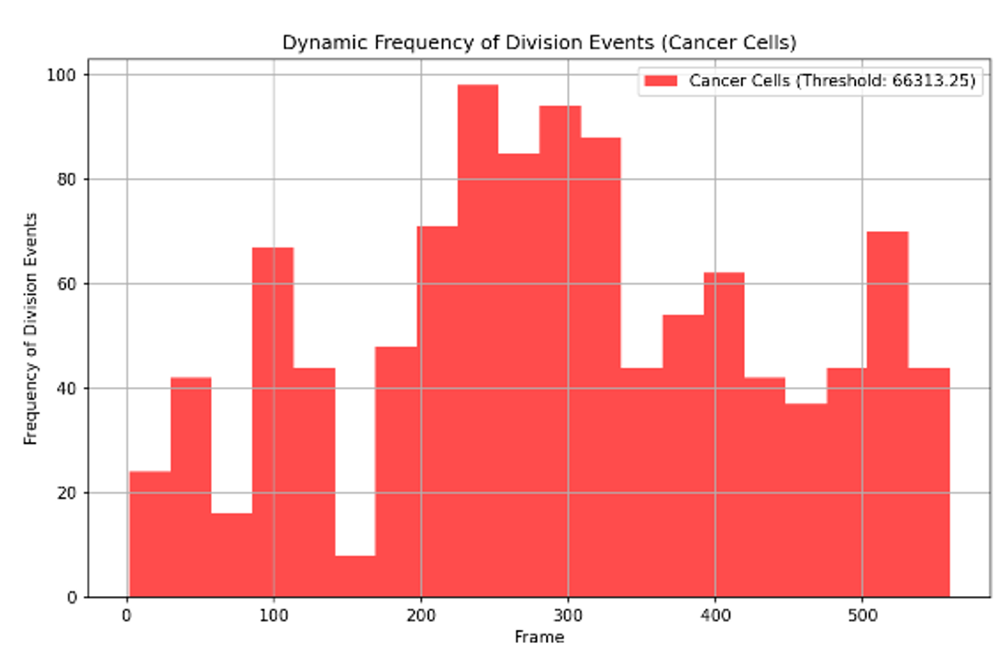

Videos obtained from YouTube. The cancer cell video features the division of breast cancer cells, whereas the normal cell video shows the live division of human cells under the microscope:
Below are the images capturing division events:
Below are the CSV files containing the analysis results:
Graphs of area and division speed for both cancer and normal cells:
Dynamic frequency histograms of division events:
